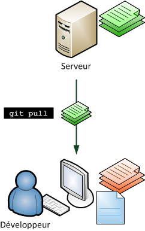

Si vous avez déjà travaillé sur un projet informatique, que ce soit un petit projet personnel ou un plus gros projet professionnel, vous avez certainement déjà rencontré un de ces problèmes :
« Qui a modifié le fichier X, il marchait bien avant et maintenant il provoque des bugs ! » ;
« Robert, tu peux m’aider en travaillant sur le fichier X pendant que je travaille sur le fichier Y ? Attention à ne pas toucher au fichier Y car si on travaille dessus en même temps je risque d’écraser tes modifications ! » ;
« Qui a ajouté cette ligne de code dans ce fichier ? Elle ne sert à rien ! » ;
« À quoi servent ces nouveaux fichiers et qui les a ajoutés au code du projet ? » ;
« Quelles modifications avions-nous faites pour résoudre le bug de la page qui se ferme toute seule ? »
Si ces problèmes-là vous parlent, vous auriez dû utiliser un logiciel de gestion de versions. Ce type de logiciel est devenu indispensable lorsqu’on travaille à plusieurs sur un même projet et donc sur le même code source. Même si vous travaillez seuls, vous aurez intérêt à commencer à en utiliser un rapidement car il vous offrira de nombreux avantages, comme la conservation d’un historique de chaque modification des fichiers par exemple.
Il existe de nombreux logiciels de gestion de versions, comme SVN (Subversion), Mercurial et Git. Dans ce tutoriel, je vous présenterai Git (prononcez « guite ») qui est un des plus puissants logiciels de ce genre. Nous l’utilisons notamment pour gérer le code source du Site du Zéro !
Les logiciels de gestion de versions sont utilisés principalement par les développeurs ; ce sont donc bel et bien des outils pour geeks. En effet, ils sont quasi exclusivement utilisés pour gérer des codes sources, car ils sont capables de suivre l’évolution d’un fichier texte ligne de code par ligne de code. ;) Ces logiciels sont fortement conseillés pour gérer un projet informatique.
Ces outils suivent l’évolution de vos fichiers source et gardent les anciennes versions de chacun d’eux.
S’ils s’arrêtaient à cela, ce ne seraient que de vulgaires outils de backup (sauvegarde). Cependant, ils proposent de nombreuses fonctionnalités qui vont vraiment vous être utiles tout au long de l’évolution de votre projet informatique :
ils retiennent qui a effectué chaque modification de chaque fichier et pourquoi. Ils sont par conséquent capables de dire qui a écrit chaque ligne de code de chaque fichier et dans quel but ;
si deux personnes travaillent simultanément sur un même fichier, ils sont capables d’assembler (de fusionner) leurs modifications et d’éviter que le travail d’une de ces personnes ne soit écrasé.
Ces logiciels ont donc par conséquent deux utilités principales :
suivre l’évolution d’un code source, pour retenir les modifications effectuées sur chaque fichier et être ainsi capable de revenir en arrière en cas de problème ;
travailler à plusieurs, sans risquer de se marcher sur les pieds. Si deux personnes modifient un même fichier en même temps, leurs modifications doivent pouvoir être fusionnées sans perte d’information.
Logiciels centralisés et distribués
Il existe deux types principaux de logiciels de gestion de versions.
Les logiciels centralisés : un serveur conserve les anciennes versions des fichiers et les développeurs s’y connectent pour prendre connaissance des fichiers qui ont été modifiés par d’autres personnes et pour y envoyer leurs modifications.
Les logiciels distribués : il n’y a pas de serveur, chacun possède l’historique de l’évolution de chacun des fichiers. Les développeurs se transmettent directement entre eux les modifications, à la façon du peer-to-peer.
Voici, schématiquement, comment fonctionne un logiciel de gestion de versions centralisé :
Un logiciel de gestion de versions centralisé. Le serveur retient les anciennes versions des fichiers et communique les changements aux développeurs.
De même, voici le fonctionnement d’un logiciel de gestion de versions distribué :
Un logiciel de gestion de versions distribué. Il n’y a pas de serveur. Les développeurs conservent l’historique des modifications et se transmettent les nouveautés.
Dans la pratique, les logiciels distribués sont rarement utilisés comme sur le schéma précédent. Même lorsque les logiciels sont capables de fonctionner en mode distribué, on utilise très souvent un serveur qui sert de point de rencontre entre les développeurs. Le serveur connaît l’historique des modifications et permet l’échange d’informations entre les développeurs, qui eux possèdent également l’historique des modifications.
Un logiciel de gestion de versions distribué avec un serveur. Le serveur sert de point de rencontre entre les développeurs et possède lui aussi l’historique des versions.
C’est dans ce dernier mode que nous allons fonctionner avec Git. :) Il a l’avantage d’être à la fois flexible et pratique. Pas besoin de faire de sauvegarde du serveur étant donné que tout le monde possède l’historique des fichiers, et le serveur simplifie la transmission des modifications.
Dans ce tutoriel, je vais vous présenter Git, le logiciel de gestion de versions que nous utilisons pour gérer le code source du Site du Zéro. Néanmoins, il existe d’autres logiciels du même type que je tiens aussi à vous présenter rapidement afin que vous les connaissiez au moins de nom.
C’est un des plus anciens logiciels de gestion de versions. Bien qu’il fonctionne et soit encore utilisé pour certains projets, il est préférable d’utiliser SVN (souvent présenté comme son successeur) qui corrige un certain nombre de ses défauts, comme son incapacité à suivre les fichiers renommés par exemple.
Probablement l’outil le plus utilisé à l’heure actuelle. Il est assez simple d’utilisation, bien qu’il nécessite comme tous les outils du même type un certain temps d’adaptation. Il a l’avantage d’être bien intégré à Windows avec le programme Tortoise SVN, là où beaucoup d’autres logiciels s’utilisent surtout en ligne de commande dans la console. Il y a un tutoriel SVN sur le Site du Zéro.
Plus récent, il est complet et puissant. Il est apparu quelques jours après le début du développement de Git et est d’ailleurs comparable à ce dernier sur bien des aspects. Vous trouverez un tutoriel sur Mercurial sur le Site du Zéro.
Un autre outil, complet et récent, comme Mercurial. Il est sponsorisé par Canonical, l’entreprise qui édite Ubuntu. Il se focalise sur la facilité d’utilisation et la flexibilité.
Très puissant et récent, il a été créé par Linus Torvalds, qui est entre autres l’homme à l’origine de Linux. Il se distingue par sa rapidité et sa gestion des branches qui permettent de développer en parallèle de nouvelles fonctionnalités.
Kernel de Linux, Debian, VLC, Android, Gnome, Qt…
Notez qu’il existe d’autres outils de gestion de versions ; je ne vous ai présenté ici que les principaux. Tous ceux de cette liste sont des logiciels libres, mais il existe aussi des logiciels propriétaires : Perforce, BitKeeper, Visual SourceSafe de Microsoft, etc.
Quelles sont les particularités de Git ?
Je n’entrerai pas dans les détails de la comparaison de Git avec les autres outils concurrents comme SVN et Mercurial. Retenez simplement que :
CVS est le plus ancien et il est recommandé de ne plus l’utiliser car il est le moins puissant et n’est plus très bien mis à jour ;
SVN est le plus connu et le plus utilisé à l’heure actuelle, mais de nombreux projets commencent à passer à des outils plus récents ;
Mercurial, Bazaar et Git se valent globalement, ils sont récents et puissants, chacun a des avantages et des défauts. Ils sont tous distribués, donc chaque développeur possède l’historique des modifications et ils permettent en théorie de se passer de serveur (bien qu’on utilise toujours un serveur pour des raisons pratiques).
Concernant les avantages de Git sur les autres, certains ont fait des listes comparatives intéressantes (bien que toujours criticables).
On retiendra surtout que Git :
est très rapide ;
sait travailler par branches (versions parallèles d’un même projet) de façon très flexible ;
est assez complexe, il faut un certain temps d’adaptation pour bien le comprendre et le manipuler, mais c’est également valable pour les autres outils ;
est à l’origine prévu pour Linux. Il existe des versions pour Windows mais pas vraiment d’interface graphique simplifiée. Il est donc à réserver aux développeurs ayant un minimum d’expérience et… travaillant de préférence sous Linux.
Une des particularités de Git, c’est l’existence de sites web collaboratifs basés sur Git comme GitHub et Gitorious. GitHub, par exemple, est très connu et utilisé par de nombreux projets : jQuery, Symfony, Ruby on Rails… C’est une sorte de réseau social pour développeurs : vous pouvez regarder tous les projets évoluer et décider de participer à l’un d’entre eux si cela vous intéresse. Vous pouvez aussi y créer votre propre projet : c’est gratuit pour les projets open source et il existe une version payante pour ceux qui l’utilisent pour des projets propriétaires.
GitHub fournit le serveur où les développeurs qui utilisent Git se rencontrent. C’est un excellent moyen de participer à des projets open source et de publier votre projet !
Nous allons voir ici comment installer Git sous Linux, Windows et Mac OS X. Comme je vous le disais plus tôt, Git est plus agréable à utiliser sous Linux et sensiblement plus rapide, mais il reste néanmoins utilisable sous Windows.
Installer Git sous Linux
Avec un gestionnaire de paquets, c’est très simple :
sudo apt-get install git-core gitk
Cela installe 2 paquets :
git-core : c’est git, tout simplement. C’est le seul paquet vraiment indispensable ;
gitk : une interface graphique qui aide à mieux visualiser les logs. Facultatif.
Il est recommandé de se créer une paire de clés pour se connecter au serveur de rencontre lorsque l’accès à Git se fait via SSH. Un tutoriel du SdZ explique comment créer des clés : http://www.siteduzero.com/tutoriel-3-7 [...] tml#ss_part_5.
Cela installe msys (un système d’émulation des commandes Unix sous Windows) et Git simultanément.
Lors de l’installation, laissez toutes les options par défaut, elles conviennent bien.
Une fois que c’est installé, vous pouvez lancer une console qui permet d’utiliser Git en ouvrant le programme Git Bash. Les commandes de base d’Unix fonctionnent sans problème : cd, pwd, mkdir, etc.
De la même façon que sous Linux, pour se connecter régulièrement à un serveur, il est recommandé de se créer une paire de clés avec Puttygen et de charger la clé en mémoire avec Pageant (normalement installé avec Putty). Toutes les explications sont dans le tutoriel du SdZ : http://www.siteduzero.com/tutoriel-3-7 [...] tml#ss_part_5.
Installer Git sous Mac OS X
Il y a plusieurs façons d’installer Git sous Mac OS X. Le plus simple est de se baser sur cet installeur pour Mac OS X.
Vous allez télécharger une archive .dmg. Il suffit de l’ouvrir pour la monter, ce qui vous donnera accès à plusieurs fichiers :
Ouvrez tout simplement l’archive .pkg qui se trouve à l’intérieur, ce qui aura pour effet d’exécuter le programme d’installation :
Suivez les étapes en laissant les valeurs par défaut (c’est suffisant), et vous aurez installé Git !
Il vous suffit ensuite d’ouvrir un terminal et vous aurez alors accès aux commandes de Git comme sous Linux. :)
Configurer Git
Maintenant que Git est installé, vous devriez avoir une console ouverte dans laquelle vous allez pouvoir taper des commandes de Git.
Dans la console, commencez par envoyer ces trois lignes :
git config --global color.diff auto
git config --global color.status auto
git config --global color.branch auto
Elles activeront la couleur dans Git. Il ne faut le faire qu’une fois, et ça aide à la lisibilité des messages dans la console.
De même, il faut configurer votre nom (ou pseudo) :
Vous pouvez aussi éditer votre fichier de configuration .gitconfig situé dans votre répertoire personnel pour y ajouter une section alias à la fin :
vim ~/.gitconfig
[color]
diff = auto
status = auto
branch = auto
[user]
name = votre_pseudo
email = [email protected]
[alias]
ci = commit
co = checkout
st = status
br = branch
Ces alias permettent de raccourcir certaines commandes de Git. Ainsi, au lieu d’écrire git checkout, vous pourrez écrire si vous le désirez git co, ce qui est plus court.
Pour commencer à travailler avec Git, il y a deux solutions :
soit vous créez un nouveau dépôt vide, si vous souhaitez commencer un nouveau projet ;
soit vous clonez un dépôt existant, c’est-à-dire que vous récupérez tout l’historique des changements d’un projet pour pouvoir travailler dessus.
Je vais vous montrer les deux méthodes : la création d’un nouveau dépôt vide et le clonage d’un dépôt existant. À vous de choisir celle que vous préférez, sachant qu’il peut être pratique de commencer par cloner un dépôt existant pour se faire la main sur un projet qui utilise déjà Git. ;)
Créer un nouveau dépôt
Commencez par créer un dossier du nom de votre projet sur votre disque. Par exemple, je vais créer /home/mateo21/plusoumoins pour héberger mon jeu « Plus ou Moins » développé en C. :)
cd /home/mateo21
mkdir plusoumoins
cd plusoumoins
Ensuite, initialisez un dépôt Git tout neuf dans ce dossier avec la commande :
git init
C’est tout ! Vous venez de créer un nouveau projet Git dans le dossier où vous vous trouvez. :) Un dossier caché .git vient tout simplement d’être créé.
Il faudra ensuite créer les fichiers source de votre projet et les faire connaître à Git en faisant des commits, ce que je vous expliquerai un peu plus loin.
Cloner un dépôt existant
Cloner un dépôt existant consiste à récupérer tout l’historique et tous les codes source d’un projet avec Git.
Pour trouver un dépôt Git, rien de plus facile ! Comme je vous le disais, GitHub est une formidable fourmilière de dépôts Git. Vous y trouverez de nombreux projets connus (certains n’utilisent pas GitHub directement mais on y trouve quand même une copie à jour du projet).
Prenons par exemple Symfony, la nouvelle version du framework PHP qui permet de créer des sites robustes facilement (il s’agit ici de la version Symfony 2 en cours de développement), que le Site du Zéro utilise, par ailleurs.
Rendez-vous sur la page GitHub du projet. Vous y voyez la liste des fichiers et des derniers changements ainsi qu’un champ contenant l’adresse du dépôt. En l’occurrence, l’adresse du dépôt de Symfony est :
http://github.com/symfony/symfony.git
Comme vous le voyez, on se connecte au dépôt en HTTP, mais il existe d’autres méthodes : les protocoles « git:// » et « ssh:// ». Le plus souvent, on utilise SSH car il permet de chiffrer les données pendant l’envoi et gère l’authentification des utilisateurs.
Pour cloner le dépôt de Symfony, il suffit de lancer la commande suivante :
git clone http://github.com/symfony/symfony.git
Cela va créer un dossier « symfony » et y télécharger tous les fichiers source du projet ainsi que l’historique de chacune de leurs modifications ! Git compresse automatiquement les données pour le transfert et le stockage afin de ne pas prendre trop de place. Néanmoins, le clonage d’un dépôt comme ceci peut prendre beaucoup de temps (ce n’est pas vraiment le cas avec Symfony, mais essayez de cloner le dépôt du Kernel Linux pour voir ! :D ).
Les messages suivants devraient apparaître dans la console :
Inutile d’essayer d’en comprendre le détail. Vous noterez toutefois que les objets sont compressés avant l’envoi, ce qui accélère le téléchargement. Une fois les fichiers reçus, Git les organise sur votre disque et vous voilà désormais en possession de tous les changements des fichiers du projet ainsi que de leur dernière version !
Vous pouvez ouvrir le dossier « symfony » et regarder son contenu, il y a tout le code source du projet. :)
Le seul dossier un peu particulier créé par Git est un dossier .git (c’est un dossier caché situé à la racine du projet). Il contient l’historique des modifications des fichiers et la configuration de Git pour ce projet. Lorsque Git crée ou clone un dépôt sur votre ordinateur, il organise les dossiers comme ceci :
En fait, Git crée tout simplement un dossier .git caché à la racine du dossier de votre projet. Vous n’aurez pas à vous rendre dans ce dossier caché en temps normal, sauf éventuellement pour modifier le fichier de configuration .git/config qui se trouve à l’intérieur. Mis à part ce dossier un peu « spécial », vous retrouverez tous les fichiers dans leur dernière version dans le dossier du projet. Ce sont eux que vous modifierez.
Créer un dépôt qui servira de serveur
Si vous souhaitez mettre en place un serveur de rencontre pour votre projet, il suffit d’y faire un git clone ou un git init avec l’option --bare. Cela aura pour effet de créer un dépôt qui contiendra uniquement le dossier .git représentant l’historique des changements (ce qui est suffisant, car personne ne modifie les fichiers source directement sur le serveur).
git init --bare // À exécuter sur le serveur.
Pour se connecter au serveur, la meilleure méthode consiste à utiliser SSH. Ainsi, si vous voulez cloner le dépôt du serveur sur votre ordinateur, vous pouvez écrire quelque chose comme :
git clone ssh://[email protected]/chemin/vers/le/depot/git // À exécuter sur votre machine.
Il faudra bien entendu vous identifier en entrant votre mot de passe (sauf si vous avez autorisé votre clé publique).
À ce stade, vous devriez avoir créé ou cloné un dépôt Git. Je vous recommande d’avoir fait un clone afin d’avoir une base de travail, ce sera plus simple que de commencer à zéro pour le moment. :)
Supposons que vous ayez cloné comme moi le dépôt Git de Symfony. Vous avez sur votre disque dur tous les fichiers source du projet et vous pouvez vous amuser à les modifier avec un éditeur de texte (pas de panique, les changements restent sur votre ordinateur, vous ne risquez pas d’envoyer des bêtises et pouvez donc faire toutes les expériences que vous voulez).
Placez-vous dans le répertoire de base du code, par exemple :
cd /home/mateo21/symfony
La commande git status vous indique les fichiers que vous avez modifiés récemment :
$ git status
# On branch master
nothing to commit (working directory clean)
Ce message nous informe que rien n’a été modifié (nothing to commit).
Méthode de travail
Lorsqu’on travaille avec Git, on suit en général toujours les étapes suivantes :
modifier le code source ;
tester votre programme pour vérifier si cela fonctionne ;
faire un commit pour « enregistrer » les changements et les faire connaître à Git ;
recommencer à partir de l’étape 1 pour une autre modification.
Qu’est-ce qu’on appelle une modification du code source ?
C’est un ensemble de changements qui permet soit de régler un bug, soit d’ajouter une fonctionnalité.
Cela peut aussi bien correspondre à une ligne changée dans un fichier que 50 lignes changées dans un fichier A et 25 lignes dans un fichier B. Un commit représente donc un ensemble de changements. À vous de déterminer, dès que vos changements sont stables, quand vous devez faire un commit.
Supposons que vous ayez effectué des modifications dans un des fichiers (par exemple src/Symfony/Components/Yaml/Yaml.php). Si vous avez modifié ce fichier et que vous l’avez enregistré, faites un git status dans la console pour voir :
$ git status
# On branch master
# Changed but not updated:
# (use "git add <file>…" to update what will be committed)
# (use "git checkout -- <file>…" to discard changes in working directory)
#
# modified: src/Symfony/Components/Yaml/Yaml.php
#
no changes added to commit (use "git add" and/or "git commit -a")
Git vous liste tous les fichiers qui ont changé sur le disque. Il peut aussi bien détecter les modifications que les ajouts, les suppressions et les renommages.
Vous pouvez voir concrètement ce que vous avez changé en tapant git diff :
$ git diff
diff --git a/src/Symfony/Components/Yaml/Yaml.php b/src/Symfony/Components/Yaml/
index fa0b806..77f9902 100644
--- a/src/Symfony/Components/Yaml/Yaml.php
+++ b/src/Symfony/Components/Yaml/Yaml.php
@@ -19,7 +19,7 @@ namespace Symfony\Components\Yaml;
*/
class Yaml
{
- static protected $spec = ’1.2’;
+ static protected $spec = ’1.3’;
/**
* Sets the YAML specification version to use.
@@ -33,6 +33,8 @@ class Yaml
if (!in_array($version, array(’1.1’, ’1.2’))) {
throw new \InvalidArgumentException(sprintf(’Version %s of the YAML
}
+
+ $mtsource = $version;
self::$spec = $version;
}
Les lignes ajoutées sont précédées d’un « + » tandis que les lignes supprimées sont précédées d’un « - ». Normalement les lignes sont colorées et donc faciles à repérer. J’ai fait des modifications aléatoires ici mais cela aurait très bien pu correspondre à la correction d’un bug ou l’ajout d’une fonctionnalité.
Par défaut, Git affiche les modifications de tous les fichiers qui ont changé. Dans notre cas, il n’y en avait qu’un, mais s’il y en avait eu plusieurs nous les aurions tous vus. Vous pouvez demander à Git d’afficher seulement les changements d’un fichier précis, comme ceci :
git diff src/Symfony/Components/Yaml/Yaml.php
Si les modifications vous paraissent bonnes et que vous les avez testées, il est temps de faire un commit.
Effectuer un commit des changements
En faisant git status, vous devriez voir les fichiers que vous avez modifiés en rouge. Cela signifie qu’ils ne seront pas pris en compte lorsque vous allez faire un commit.
Il faut explicitement préciser les fichiers que vous voulez « commiter ». Pour cela, trois possibilités :
faire git add nomfichier1 nomfichier2 pour ajouter les fichiers à la liste de ceux devant faire l’objet d’un commit, puis faire un git commit. Si vous faites un git status après un git add, vous les verrez alors en vert ;
faire git commit -a pour « commiter » tous les fichiers qui étaient listés dans git status dans les colonnes « Changes to be committed » et « Changed but not updated » (qu’ils soient en vert ou en rouge) ;
faire git commit nomfichier1 nomfichier2 pour indiquer lors du commit quels fichiers précis doivent être « commités ».
J’utilise personnellement la seconde solution lorsque je veux « commiter » tous les fichiers que j’ai modifiés, et la troisième solution lorsque je veux « commiter » seulement certains des fichiers modifiés. Faire appel à git add est indispensable lorsque vous venez de créer de nouveaux fichiers que Git ne connaît pas encore. Cela lui permet de les prendre en compte pour le prochain commit.
Lorsque la commande commit est lancée, l’éditeur par défaut (généralement nano ou Vim) s’ouvre. Vous devez sur la première ligne taper un message qui décrit à quoi correspondent vos changements.
Exemple de messages de commit d’une ligne corrects :
« Améliore la visibilité des post-it sur le forum. » ;
« Simplifie l’interface de changement d’avatar. » ;
« Résout #324 : bug qui empêchait de valider un tutoriel à plusieurs ».
Comme vous pouvez le constater, on a tendance à écrire les messages de commit au présent. D’autre part, vous remarquerez que la plupart des projets open source sont écrits en anglais, donc il est fréquent de voir des messages de commit en anglais.
Une fois le message de commit enregistré, Git va officiellement sauvegarder vos changements dans un commit. Il ajoute donc cela à la liste des changements qu’il connaît du projet.
git commit ajoute vos dernières modifications à votre historique des modifications.
Il est fréquent de chercher à comprendre ce qui s’est passé récemment, pourquoi une erreur a été introduite et comment annuler ce changement qui pose problème. C’est même là tout l’intérêt d’un logiciel de gestion de versions comme Git. ;)
Nous allons d’abord apprendre à lire les logs, puis nous verrons comment corriger une erreur.
Que s’est-il passé ? Vérifions les logs
Il est possible à tout moment de consulter l’historique des commits : ce sont les logs. Vous pouvez ainsi retrouver tout ce qui a été changé depuis les débuts du projet.
Lorsque vous avez effectué un commit, vous devriez donc le voir dans git log :
commit 227653fd243498495e4414218e0d4282eef3876e
Author: Fabien Potencier <[email protected]>
Date: Thu Jun 3 08:47:46 2010 +0200
[TwigBundle] added the javascript token parsers in the helper extension
commit 6261cc26693fa1697bcbbd671f18f4902bef07bc
Author: Jeremy Mikola <[email protected]>
Date: Wed Jun 2 17:32:08 2010 -0400
Fixed bad examples in doctrine:generate:entities help output.
commit 12328a1bcbf231da8eaf942f8d68c7dc0c7c4f38
Author: Fabien Potencier <[email protected]>
Date: Thu Jun 3 08:42:22 2010 +0200
[TwigBundle] updated the bundle to work with the latest Twig version
Vous pouvez parcourir les logs avec les touches « Page up », « Page down » et les flèches directionnelles, et quitter en appuyant sur la touche « Q ». Git utilise en fait le programme « less » pour paginer les résultats.
Utilisez l’option -p pour avoir le détail des lignes qui ont été ajoutées et retirées dans chaque commit, en tapant git log -p :
commit 227653fd243498495e4414218e0d4282eef3876e
Author: Fabien Potencier <[email protected]>
Date: Thu Jun 3 08:47:46 2010 +0200
[TwigBundle] added the javascript token parsers in the helper extension
diff --git a/src/Symfony/Framework/TwigBundle/Extension/Helpers.php b/src/Symfon
index e4c9cce..57a3d2f 100644
--- a/src/Symfony/Framework/TwigBundle/Extension/Helpers.php
+++ b/src/Symfony/Framework/TwigBundle/Extension/Helpers.php
@@ -33,6 +33,8 @@ class Helpers extends \Twig_Extension
public function getTokenParsers()
{
return array(
+ new JavascriptTokenParser(),
+ new JavascriptsTokenParser(),
new StylesheetTokenParser(),
new StylesheetsTokenParser(),
new RouteTokenParser(),
commit 6261cc26693fa1697bcbbd671f18f4902bef07bc
Author: Jeremy Mikola <[email protected]>
Date: Wed Jun 2 17:32:08 2010 -0400
Vous pouvez avoir un résumé plus court des commits avec git log --stat :
commit 227653fd243498495e4414218e0d4282eef3876e
Author: Fabien Potencier <[email protected]>
Date: Thu Jun 3 08:47:46 2010 +0200
[TwigBundle] added the javascript token parsers in the helper extension
…/Framework/TwigBundle/Extension/Helpers.php | 2 ++
1 files changed, 2 insertions(+), 0 deletions(-)
commit 6261cc26693fa1697bcbbd671f18f4902bef07bc
Author: Jeremy Mikola <[email protected]>
Date: Wed Jun 2 17:32:08 2010 -0400
Fixed bad examples in doctrine:generate:entities help output.
…/Command/GenerateEntitiesDoctrineCommand.php | 4 ++--
1 files changed, 2 insertions(+), 2 deletions(-)
Corriger une erreur
Voici différentes méthodes permettant de corriger les erreurs, selon leur ancienneté ou leur importance.
Modifier le dernier message de commit
Si vous avez fait une faute d’orthographe dans votre dernier message de commit ou que vous voulez tout simplement le modifier, vous pouvez le faire facilement grâce à la commande suivante :
git commit --amend
L’éditeur de texte s’ouvrira à nouveau pour changer le message.
Cette commande est généralement utilisée juste après avoir effectué un commit lorsqu’on se rend compte d’une erreur dans le message. Il est en effet impossible de modifier le message d’un commit lorsque celui-ci a été transmis à d’autres personnes.
Annuler le dernier commit (soft)
Si vous voulez annuler votre dernier commit :
git reset HEAD^
Cela annule le dernier commit et revient à l’avant-dernier.
Pour indiquer à quel commit on souhaite revenir, il existe plusieurs notations :
d6d98923868578a7f38dea79833b56d0326fcba1 : indique un numéro de commit précis ;
d6d9892 : indique un numéro de commit précis (notation équivalente à la précédente, bien souvent écrire les premiers chiffres est suffisant tant qu’aucun autre commit ne commence par les mêmes chiffres).
Seul le commit est retiré de Git ; vos fichiers, eux, restent modifiés.
Vous pouvez alors à nouveau changer vos fichiers si besoin est et refaire un commit.
Annuler tous les changements du dernier commit (hard)
Si vous voulez annuler votre dernier commit et les changements effectués dans les fichiers, il faut faire un reset hard.
git reset --hard HEAD^ /!\ Annule les commits et perd tous les changements
Normalement, Git devrait vous dire quel est maintenant le dernier commit qu’il connaît (le nouveau HEAD) :
$ git reset --hard HEAD^
HEAD is now at 6261cc2 Fixed bad examples in doctrine:generate:entities help output.
Annuler les modifications d’un fichier avant un commit
Si vous avez modifié plusieurs fichiers mais que vous n’avez pas encore envoyé le commit et que vous voulez restaurer un fichier tel qu’il était au dernier commit, utilisez git checkout :
git checkout nomfichier
Le fichier redeviendra comme il était lors du dernier commit.
Annuler/Supprimer un fichier avant un commit
Supposons que vous veniez d’ajouter un fichier à Git avec git add et que vous vous apprêtiez à le « commiter ». Cependant, vous vous rendez compte que ce fichier est une mauvaise idée et vous voudriez annuler votre git add.
Il est possible de retirer un fichier qui avait été ajouté pour être « commité » en procédant comme suit :
Pour le moment, vous avez tout effectué en local. Comment partager votre travail avec d'autres personnes ?
Télécharger les nouveautés
La commande git pull télécharge les nouveautés depuis le serveur :
git pull

git pull télécharge les nouvelles modifications effectuées par d’autres personnes.
Deux cas sont possibles :
soit vous n’avez effectué aucune modification depuis le dernier pull, dans ce cas la mise à jour est simple (on parle de mise à jour fast-forward) ;
soit vous avez fait des commits en même temps que d’autres personnes. Les changements qu’ils ont effectués sont alors fusionnés aux vôtres automatiquement.
Si deux personnes modifient en même temps deux endroits distincts d’un même fichier, les changements sont intelligemment fusionnés par Git.
Parfois, mais cela arrive normalement rarement, deux personnes modifient la même zone de code en même temps. Dans ce cas, Git dit qu’il y a un conflit car il ne peut décider quelle modification doit être conservée ; il vous indique alors le nom des fichiers en conflit. Ouvrez-les avec un éditeur et recherchez une ligne contenant « <<<<<<<<< ». Ces symboles délimitent vos changements et ceux des autres personnes. Supprimez ces symboles et gardez uniquement les changements nécessaires, puis faites un nouveau commit pour enregistrer tout cela.
Envoyer vos commits
Vous pouvez envoyer vos commits sur le serveur qui sert de point de rencontre entre les développeurs.
Nous supposons ici que vous avez mis en place un serveur pour votre projet.
Avant d’envoyer vos commits, je vous recommande fortement de consulter votre log local afin de savoir ce que vous vous apprêtez à envoyer :
git log -p
Vérifiez que tout est conforme et qu’il n’y a pas d’erreur qui vous saute aux yeux. Il est encore temps de corriger ces commits, mais une fois envoyés, il sera trop tard !
Une fois que vous êtes sûrs, passez à l’envoi. Vous pouvez envoyer vos commits avec la commande git push :
git push
git push envoie vos nouvelles modifications (commits) sur le serveur.
Le changement vers le serveur doit être de type fast-forward car le serveur ne peut régler les conflits à votre place s’il y en a. Personne ne doit avoir fait un push avant vous depuis votre dernier pull.
Le mieux est de s’assurer que vous êtes à jour en faisant un pull avant de faire un push. Si le push échoue, vous serez de toute façon invités à faire un pull.
Annuler un commit publié
Dans le cas malheureux où vous auriez quand même envoyé un commit erroné sur le serveur, il reste possible de l’annuler… en créant un nouveau commit qui effectue l’inverse des modifications (souvenez-vous qu’il n’est pas possible de supprimer un vieux commit envoyé, on ne peut qu’en créer de nouveaux.). Les lignes que vous aviez ajoutées seront supprimées dans ce commit, et inversement.
Jetez tout d’abord un œil à votre git log :
commit 227653fd243498495e4414218e0d4282eef3876e
Author: Fabien Potencier <[email protected]>
Date: Thu Jun 3 08:47:46 2010 +0200
[TwigBundle] added the javascript token parsers in the helper extension
commit 6261cc26693fa1697bcbbd671f18f4902bef07bc
Author: Jeremy Mikola <[email protected]>
Date: Wed Jun 2 17:32:08 2010 -0400
Fixed bad examples in doctrine:generate:entities help output.
Supposons que vous vouliez annuler le commit 6261cc2 dans cet exemple. Il faut utiliser git revert qui va créer un commit « inverse » :
git revert 6261cc2
Il faut préciser l’ID du commit à « revert ». Je vous rappelle qu’il n’est pas obligatoire d’indiquer l’ID en entier (qui est un peu long), il suffit de mettre les premiers chiffres tant qu’ils sont uniques (les 4-5 premiers chiffres devraient suffire).
On vous invite à entrer un message de commit. Un message par défaut est indiqué dans l’éditeur.
Une fois que c’est enregistré, le commit d’annulation est créé. Il ne vous reste plus qu’à vérifier que tout est bon et à le publier (avec un git push).
Les branches font partie du cœur même de Git et constituent un de ses principaux atouts. C’est un moyen de travailler en parallèle sur d’autres fonctionnalités. C’est comme si vous aviez quelque part une « copie » du code source du site qui vous permet de tester vos idées les plus folles et de vérifier si elles fonctionnent avant de les intégrer au véritable code source de votre projet.
Bien que les branches soient « la base » de Git, je n’en ai pas parlé avant pour rester simple. Pourtant, il faut absolument les connaître et s’en servir. La gestion poussée des branches de Git est la principale raison qui incite les projets à passer à Git, donc il vaut mieux comprendre comment ça fonctionne et en faire usage, sinon on passe vraiment à côté de quelque chose. :)
Dans Git, toutes les modifications que vous faites au fil du temps sont par défaut considérées comme appartenant à la branche principale appelée « master » :
On voit sur ce schéma les commits qui sont effectués au fil du temps.
Supposons que vous ayez une idée pour améliorer la gestion des erreurs dans votre programme mais que vous ne soyez pas sûrs qu’elle va fonctionner : vous voulez faire des tests, ça va vous prendre du temps, donc vous ne voulez pas que votre projet incorpore ces changements dans l’immédiat.
Il suffit de créer une branche, que vous nommerez par exemple « idee_gestion_erreurs », dans laquelle vous allez pouvoir travailler en parallèle :
À un moment donné, nous avons décidé de créer une nouvelle branche. Nous avons pu y faire des commits, mais cela ne nous a pas empêché de continuer à travailler sur la branche principale et d’y faire des commits aussi.
À la fin, mon idée s’est révélée concluante, j’ai largement amélioré la gestion des erreurs et j’ai donc intégré les changements dans la branche principale « master ». Mon projet dispose maintenant de mon idée que j’avais développée en parallèle. Tous les commits de ma branche se retrouvent fusionnés dans la branche principale.
Git n’est pas le seul outil capable de gérer des branches, mais il est le seul à le faire aussi bien. En effet, en temps normal vous pourriez tout simplement copier le répertoire de votre projet dans un autre dossier, tester les modifications et les incorporer ensuite dans le véritable dossier de votre projet. Mais cela aura nécessité de copier tous les fichiers et de se souvenir de tout ce que vous avez modifié. Et je ne vous parle même pas du cas où quelqu’un aurait modifié le même fichier que vous en même temps dans la branche principale !
Git gère tous ces problèmes pour vous. Au lieu de créer une copie des fichiers, il crée juste une branche « virtuelle » dans laquelle il retient vos changements en parallèle. Lorsque vous décidez de fusionner une branche (et donc de ramener vos changements dans « master » pour les valider), Git vérifie si vos modifications n’entrent pas en conflit avec des commits effectués en parallèle. S’il y a des conflits, il essaie de les résoudre tout seul ou vous avertit s’il a besoin de votre avis (c’est le cas si deux personnes ont modifié la même ligne d’un même fichier par exemple).
Ce concept de branches très légères qui ne nécessitent pas de copier les fichiers est d’une grande puissance. Cela vous encourage à créer des branches tout le temps, pour toutes les modifications qui pourraient prendre du temps avant d’être terminées.
Vous pouvez même créer une sous-branche à partir d’une branche !
Dans le cas ci-dessus, ma sous-branche ne s’est pas révélée concluante ; j’ai donc dû la supprimer et aucun des commits intermédiaires ne sera finalement incorporé à la branche principale du projet.
Les branches locales
Tout le monde commence avec une seule branche « master » : c’est la branche principale. Jusqu’ici, vous avez donc travaillé dans la branche « master », sur le « vrai » code source de votre projet.
Pour voir toutes vos branches, tapez ceci :
git branch
Vous verrez normalement uniquement « master » :
$ git branch
* master
Il y a une étoile devant pour indiquer que c’est la branche sur laquelle vous êtes actuellement.
Pourquoi créer une branche et quand dois-je en créer une ?
Lorsque vous vous apprêtez à faire des modifications sur le code source, posez-vous les questions suivantes :
« Ma modification sera-t-elle rapide ? » ;
« Ma modification est-elle simple ? » ;
« Ma modification nécessite-t-elle un seul commit ? » ;
« Est-ce que je vois précisément comment faire ma modification d’un seul coup ? ».
Si la réponse à l’une de ces questions est « non », vous devriez probablement créer une branche. Créer une branche est très simple, très rapide et très efficace. Il ne faut donc pas s’en priver.
Créez une branche pour toute modification que vous vous apprêtez à faire et qui risque d’être un peu longue.
Au pire, si votre modification est plus courte que prévu, vous aurez créé une branche « pour pas grand-chose », mais c’est toujours mieux que de se rendre compte de l’inverse.
Créer une branche et changer de branche
Supposons que vous vouliez « améliorer la page des options membres » du code de votre site. Vous n’êtes pas sûrs du temps que cela va prendre, ce n’est pas un changement simple qui consiste à modifier deux-trois liens et vous risquez de faire plusieurs commits. Bref, il faut créer une branche pour cela.
git branch options_membres
Cela crée une branche appelée « options_membres ». Il est important de noter que cette branche est locale : vous seuls y avez accès (il est néanmoins possible de publier une branche pour que d’autres personnes puissent vous aider, mais ce n’est pas le sujet pour le moment).
Une fois la branche créée, vous devriez la voir quand vous tapez simplement git branch :
$ git branch
* master
options_membres
Comme vous pouvez le voir, vous êtes toujours sur la branche « master ». Pour aller sur la branche « options_membres », tapez ceci :
git checkout options_membres
Qu’est-ce qui se passe lorsque l’on change de branche ? En fait, vous ne changez pas de dossier sur votre disque dur, mais Git change vos fichiers pour qu’ils reflètent l’état de la branche dans laquelle vous vous rendez. Imaginez que les branches dans Git sont comme des dossiers virtuels : vous « sautez » de l’un à l’autre avec la commande git checkout. Vous restez dans le même dossier, mais Git modifie les fichiers qui ont changé entre la branche où vous étiez et celle où vous allez.
Faites maintenant des modifications sur les fichiers, puis un commit, puis d’autres modifications, puis un commit, etc. Si vous faites git log, vous verrez tous vos récents commits.
Maintenant, supposons qu’un bug important ait été détecté sur votre site et que vous deviez le régler immédiatement. Revenez sur la branche « master », branche principale du site :
git checkout master
Faites vos modifications, un commit, éventuellement un push s’il faut publier les changements de suite, etc.
Ensuite, revenez à votre branche :
git checkout options_membres
Si vous faites un git log, vous verrez que le commit que vous avez effectué sur la branche « master » n’apparaît pas. C’est en cela que les branches sont distinctes.
Fusionner les changements
Lorsque vous avez fini de travailler sur une branche et que celle-ci est concluante, il faut « fusionner » cette branche vers « master » avec la commande git merge.
Supposons que vous ayez fini votre travail dans la branche « options_membres » et que vous vouliez maintenant le publier. Pour cela, il faut fusionner le contenu de la branche « options_membres » dans la branche principale « master ».
Rendez-vous d’abord dans la branche « master » :
git checkout master
Demandez ensuite à y intégrer le travail que vous avez fait dans « options_membres » :
git merge options_membres
Tous vos commits de la branche « options_membres » se retrouvent maintenant dans « master » ! Vous avez pu travailler en parallèle sans gêner la branche principale, et maintenant que votre travail est terminé vous l’avez appliqué sur « master » !
Votre branche « options_membres » ne servant plus à rien, vous pouvez la supprimer :
git branch -d options_membres
Git vérifie que votre travail dans la branche « options_membres » a bien été fusionné dans « master ». Sinon, il vous en avertit et vous interdit de supprimer la branche (vous risqueriez sinon de perdre tout votre travail dans cette branche !).
Si vraiment vous voulez supprimer une branche même si elle contient des changements que vous n’avez pas fusionnés (par exemple parce que votre idée à la base était une erreur), utilisez l’option -D (lettre capitale) :
git branch -D options_membres /!\ Supprime la branche et perd tous les changements.
Mettre de côté le travail en cours avant de changer de branche
Avant de changer de branche, vous devez avoir effectué un commit de tous vos changements. En clair, un git status ne devrait afficher aucun fichier en cours de modification.
Si vous avez des changements non « commités » et que vous changez de branche, les fichiers modifiés resteront comme ils étaient dans la nouvelle branche (et ce n’est en général pas ce que vous voulez !).
Pour éviter d’avoir à faire un commit au milieu d’un travail en cours, tapez :
git stash
Vos fichiers modifiés seront sauvegardés et mis de côté. Maintenant, git status ne devrait plus afficher aucun fichier (on dit que votre working directory est propre).
Vous pouvez alors changer de branche, faire vos modifications, « committer », puis revenir sur la branche où vous étiez.
git checkout master
(modifier des fichiers)
git commit -a
git checkout mabranche
Pour récupérer les changements que vous aviez mis de côté dans « mabranche », tapez :
git stash apply
Vos fichiers seront alors restaurés et se retrouveront donc l’état dans lequel ils étaient avant le git stash !
Les branches partagées
Il est possible de travailler à plusieurs sur une même branche. En fait, c’est déjà ce que vous faisiez en travaillant sur la branche « master ».
Utilisez git branch -r pour lister toutes les branches que le serveur connaît :
$ git branch -r
origin/HEAD
origin/master
origin, c’est le nom du serveur depuis lequel vous avez cloné le dépôt (par exemple celui de GitHub). Vous pouvez en théorie suivre directement les branches de plusieurs personnes (souvenez-vous, Git fonctionne un peu comme le peer-to-peer), mais on travaille plutôt avec un serveur pour suivre les changements.
Si on met de côté « HEAD » qui est un peu particulier, on voit qu’il y a une seule branche sur le serveur : « master ». Le serveur ne connaît donc que l’historique de la branche principale.
Si le serveur possède une autre branche, par exemple « origin/options_membres », et que vous souhaitez travailler dessus, il faut créer une copie de cette branche sur votre ordinateur qui va « suivre » (on dit tracker) les changements sur le serveur.
Lorsque vous ferez un pull depuis la branche « options_membres », les changements seront fusionnés dans votre « options_membres » local. Il est donc important de savoir dans quelle branche vous vous trouvez avant de faire un pull. Un pull depuis la branche « master » met à jour votre branche « master » locale en fonction de ce qui a changé sur le serveur, et il en va de même pour n’importe quelle autre branche.
Ajouter ou supprimer une branche sur le serveur
Il est possible d’ajouter des branches sur le serveur pour y travailler à plusieurs, mais il faut reconnaître que la syntaxe proposée par Git est tout sauf claire à ce niveau.
Voici comment on ajoute une branche sur le serveur :
Vous pouvez ensuite créer une branche locale qui « suit » la branche du serveur avec git branch --track, comme nous l’avons vu précédemment.
Pour supprimer une branche sur le serveur :
git push origin :heads/nom_branche_a_supprimer
À noter que les « remote tracking branches » (celles qui apparaissent lorsqu’on fait git branch -r) ne seront pas automatiquement supprimées chez les autres clients. Il faut qu’ils les suppriment manuellement à l’aide de la commande suivante :
Je vous ai présenté les principales fonctionnalités de Git, mais il est possible de faire bien d'autres choses avec cet outil. Voici, en vrac, quelques-unes de ses autres possibilités utiles à connaître.
Tagger une version
Il est possible de donner un alias à un commit précis pour le référencer sous ce nom. C’est utile par exemple pour dire « À tel commit correspond la version 1.3 de mon projet ». Cela permettra à d’autres personnes de repérer la version 1.3 plus facilement. C’est justement le rôle des tags.
Pour ajouter un tag sur un commit :
git tag NOMTAG IDCOMMIT
Donc dans le cas présent, on écrirait :
git tag v1.3 2f7c8b3428aca535fdc970feeb4c09efa33d809e
Un tag n’est pas envoyé lors d’un push, il faut préciser l’option --tags pour que ce soit le cas :
git push --tags
Maintenant, tout le monde peut référencer ce commit par ce nom plutôt que par son numéro de révision.
Pour supprimer un tag créé :
git tag -d NOMTAG
Rechercher dans les fichiers source
Comme Git connaît tous les fichiers source de votre projet, il est facile de faire une recherche à l’intérieur de tout votre projet.
Par exemple, si vous voulez connaître les noms des fichiers qui contiennent le mot TODO dans le code source, il suffit d’écrire :
git grep "TODO"
Si vous voulez connaître les numéros des lignes qui contiennent le mot que vous recherchez, utilisez le paramètre -n :
git grep -n "TODO"
Demander à Git d’ignorer des fichiers (.gitignore)
Pour ignorer un fichier dans git, créez un fichier .gitignore (à la racine) et indiquez-y le nom du fichier. Entrez un nom de fichier par ligne, comme ceci :
project.xml
dossier/temp.txt
*.tmp
cache/*
Aucun de ces fichiers n’apparaîtra dans git status, même s’il est modifié. Il ne paraîtra donc pas dans les commits. Utilisez cela sur les fichiers temporaires par exemple, qui n’ont aucune raison d’apparaître dans Git.
Il est possible d’utiliser une étoile (*) comme joker. Dans l’exemple précédent, tous les fichiers ayant l’extension « .tmp » seront ignorés, de même que tous les fichiers du dossier cache.
Git est un outil très complet qui peut parfois se révéler complexe. Comme tout bon outil UNIX, il fait ce qu’on lui demande sans confirmation, ce qui peut être dangereux entre les mains d’un débutant. Commencez donc à l’utiliser doucement et apprenez petit à petit à découvrir ses autres fonctionnalités : vous allez être surpris !
C’est un outil réellement puissant que je recommande aux développeurs, particulièrement ceux qui travaillent sous Linux. Ce n’est pas le seul qui existe (je pense à Mercurial et Bazaar que vous pouvez également essayer et qui sont très bien) mais il a son lot d’avantages, tels que sa rapidité et sa gestion puissante des branches.
Je vous recommande d’essayer de préférence un logiciel de gestion de versions récent (comme Git, Mercurial ou Bazaar) et d’éviter si vous le pouvez SVN, qui commence à se faire vieux. Si vous utilisez déjà SVN pour votre projet, sachez qu’il est possible de migrer facilement à Git avec l’outil git-svn. Il sert aussi à faire le pont entre un serveur SVN et Git, ce qui vous permet d’utiliser Git de votre côté même si votre projet utilise officiellement SVN !
Si vous voulez en savoir plus sur Git, je vous recommande le cours Pro Git (en anglais), qui couvre plus en détail le fonctionnement de Git.